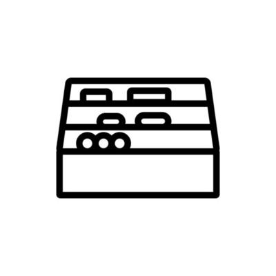

BeWeb.
Planifier
"Chaque apprentissage commence par une bonne planification. Chez BeWeb, nous vous aidons à structurer votre parcours en définissant des objectifs clairs et des étapes précises. Que ce soit l'organisation de votre temps, la sélection des modules adaptés à votre niveau, ou la mise en place d'un suivi efficace, une planification solide est essentielle pour maximiser votre progression et atteindre vos ambitions professionnelles. Anticipez, structurez, et avancez sereinement vers la réussite !"
Organiser
"Une fois votre plan défini, l'organisation est la clé de votre progression. Chez BeWeb, nous vous accompagnons pour structurer vos apprentissages de manière fluide et efficace. Grâce à une approche méthodique et adaptée, vous pourrez gérer vos modules, suivre vos progrès et maximiser votre engagement. Une organisation rigoureuse vous permettra de mieux absorber les connaissances et d’aborder sereinement les prochaines étapes de votre formation. Préparez-vous à apprendre avec confiance et clarté !"
Développer
"Avec une bonne planification et une organisation efficace, il est temps de passer à l’action et de développer vos compétences. Chez BeWeb, nous mettons l’accent sur l’apprentissage pratique à travers des projets concrets qui vous préparent à la réalité du monde professionnel. Grâce à nos parcours immersifs, vous explorerez les technologies modernes, affinerez vos compétences et construirez un avenir solide dans votre domaine. Transformez vos idées en réalité et façonnez votre expertise !"
<
DWWM (niveau 5)
Le Titre Professionnel Développeur Web et Web Mobile (DWWM) est une certification de niveau 5 (BAC+2) délivrée par le Ministère du Travail. Il permet aux apprenants de maîtriser les langages et outils essentiels à la création de sites web et d’applications mobiles sécurisées. Cette formation ouvre des opportunités pour travailler en entreprise ou en tant qu’indépendant dans le secteur du numérique. Plus d'infos
CDA (niveau 6)
Le Titre Professionnel Concepteur D√©veloppeur d'Applications (CDA) est une certification de niveau 6 (BAC+3/4) qui permet d'acqu√©rir des comp√©tences avanc√©es en d√©veloppement logiciel et gestion de projets num√©riques. Cette formation pr√©pare les apprenants √† concevoir, programmer et optimiser des applications web et mobiles en utilisant des technologies modernes. Les dipl√¥m√©s peuvent √©voluer vers des postes tels que d√©veloppeur full-stack, ing√©nieur logiciel ou chef de projet IT. üöÄ Plus d'infos
TSSR (niveau 5)
Le Titre Professionnel Technicien Supérieur Systèmes et Réseaux (TSSR) est une certification de niveau 5 (BAC+2) qui forme des spécialistes en gestion et sécurisation des infrastructures informatiques. Les apprenants acquièrent des compétences en exploitation des réseaux, administration des systèmes, virtualisation et cybersécurité. Cette formation permet d’accéder à des postes tels que technicien réseau, administrateur systèmes ou support informatique dans divers secteurs numériques Plus d'infos
>
Contactez-nous
"Besoin d’informations sur nos formations ou envie d’échanger sur votre projet professionnel ? La section Contact est là pour vous permettre de nous joindre facilement. Remplissez simplement le formulaire avec votre nom et votre email, et notre équipe vous répondra dans les plus brefs délais. Chez BeWeb, nous sommes à votre écoute pour vous guider et vous accompagner vers le parcours qui vous correspond. N’hésitez pas à nous écrire !"